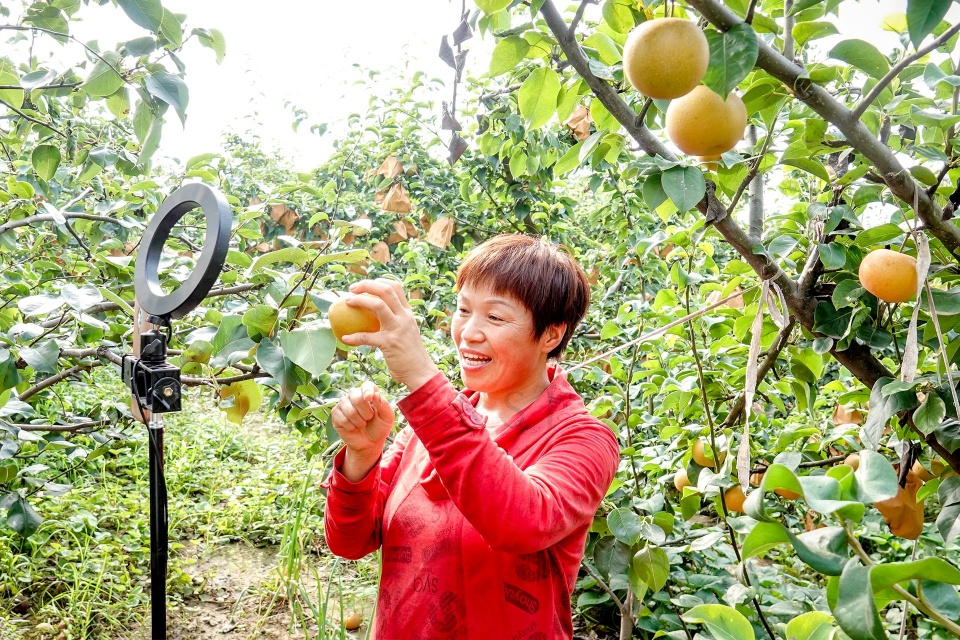

In China, some e-commerce platforms, like Douyin, expand rural e-commerce operations and work together to revitalize rural areas

1. Live Commerce
All the short videos and live commerce focus on the local specialties of their hometown or the fruits and vegetables they grow. This can let more people know and buy online from supplier, which may cheaper than buying in the supermarkets.
2. Short Videos and Online shops
They focus on using short videos to record their life, such as cooking, and intersperse some items they use in the video. There are always buylinks, which can easily jump to the purchase page, under the videos.